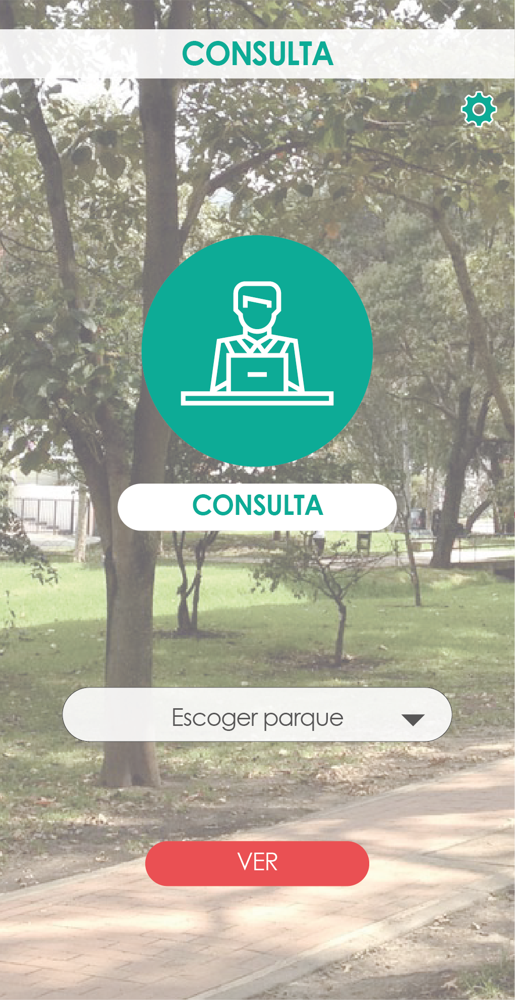

<ion-content class="background-image">

    <ion-card>
    
      <button class="rise">Escoger Parque</button>
      <button class="see"(click)=see()>VER</button>
      <button class="atras" (click)=login()>Atras</button>
       
    </ion-card>
  
  </ion-content>